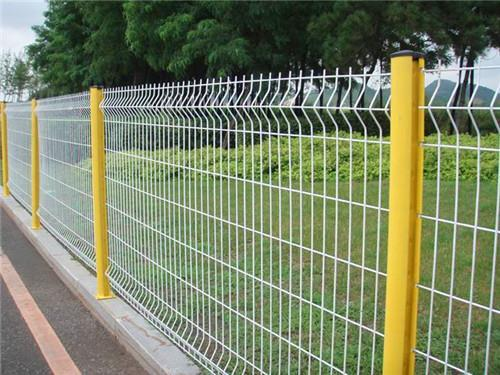

重庆护栏网行业新动态：助力城市安全与美观
发布时间：2025 年 3 月 11 日
重庆护栏网在城市建设中地位关键，随城市化加速，其需求持续增长，广泛应用于交通、居民区等领域，保障安全、提升形象。重庆本地企业在市场推动下创新发展，产品多样且注重质量。技术创新成行业亮点，引入智能化生产技术、研发新型复合材料护栏网，提升产品性能与竞争力。同时，相关部门加强监管，规范市场，保障消费者权益。未来，重庆护栏网行业机遇与挑战并存，企业将加大创新，助力城市发展。
在重庆这座充满活力与魅力的山城，城市建设与发展日新月异。其中，重庆护栏网作为城市基础设施的重要组成部分，正发挥着愈发关键的作用，成为保障市民安全、提升城市形象的重要元素。 随着城市化进程的加速，重庆对于护栏网的需求持续攀升。无论是交通道路的隔离防护，还是小区、公园、学校等场所的安全围护，护栏网都承担着不可或缺的功能。在交通领域，高质量的护栏网有效防止了车辆的失控闯入，降低了交通事故的严重程度，为市民的出行安全构筑了坚实防线。在居民区，美观且坚固的护栏网不仅划分了私人与公共空间，还为居民提供了安心的居住环境。 值得一提的是，重庆本地的护栏网企业在市场需求的推动下，不断创新发展。以 [企业名称 1] 为例，该企业专注于护栏网的研发、生产与销售多年，凭借先进的生产设备和专业的技术团队，能够根据不同的应用场景，定制出多样化的护栏网产品。从传统的铁艺护栏到新型的塑钢、不锈钢护栏，其产品种类丰富，涵盖了各种风格和规格，满足了市场的多元化需求。同时，企业注重产品质量，严格把控生产流程，确保每一片护栏网都具备卓越的防护性能和耐用性。 技术创新也是重庆护栏网行业发展的一大亮点。[企业名称 2] 积极引入智能化生产技术，通过自动化设备提高生产效率，降低生产成本。并且，在材料研发方面取得突破，研发出一种新型复合材料护栏网，这种护栏网不仅具备更强的抗腐蚀、抗老化性能，而且重量更轻，安装更加便捷。新技术、新材料的应用，使得重庆护栏网在质量和性能上实现了质的飞跃，在市场竞争中占据了优势地位。 此外，为了更好地规范重庆护栏网市场，相关部门加强了监管力度，制定了一系列严格的行业标准和规范。这不仅保障了消费者的权益，也促使企业不断提升产品质量和服务水平，推动整个行业朝着健康、有序的方向发展。 展望未来，随着重庆城市建设的持续推进，重庆护栏网行业将迎来更多机遇与挑战。各企业将继续加大创新投入，提升产品品质，为城市的安全与美观贡献更多力量，助力重庆在城市发展的道路上稳步前行。。